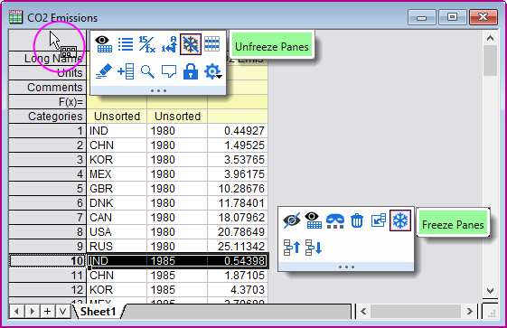

Zeilen/Spalten fixieren
freeze-rows-columns
Anwender können die ersten 1 bis 10 Zeilen und/oder Spalten im Arbeitsblatt fixieren und sie auf diese Weise in der Ansicht "sperren", während es möglich ist, durch die restlichen Zeilen bzw. Spalten zu scrollen. Gesperrte Zeilen- und Spaltenheader werden in einer dunkleren Farbe schattiert, um die Fixierung zu kennzeichnen.

- Markieren Sie eine Zeile oder Spalte oder eine einzelne Zelle zwischen Indexzeile/-spalte = 1 und 10 und tun SIe dann Folgendes:
- Wählen Sie Ansicht: Bereich fixieren/Fixierung aufheben.
- Drücken Sie Strg + Shift + F.
- Wählen Sie eine Zeile/Spalte oder eine einzelne Zelle und klicken Sie auf die Schaltfläche Bereich fixieren der Minisymbolleiste.
- Um die Fixierung der Zeilen oder Spalten aufzuheben, klicken Sie auf die Zelle oben links im Blatt und dann auf die Schaltfläche Fixierung aufheben. Oder wählen Sie Ansicht: Bereich fixieren/Fixierung aufheben.
- 